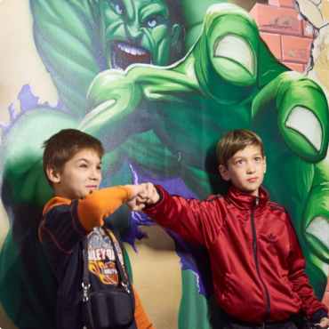
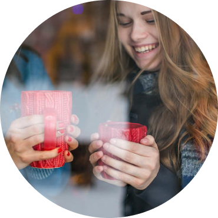
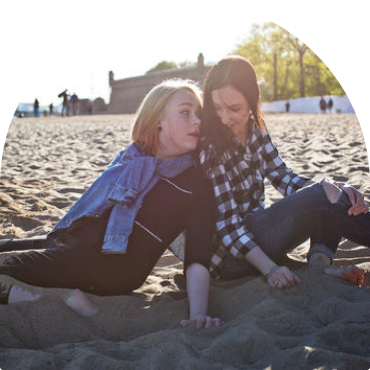
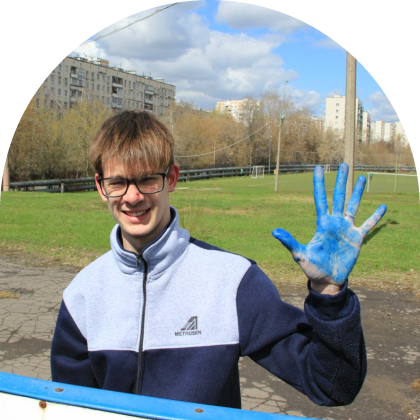
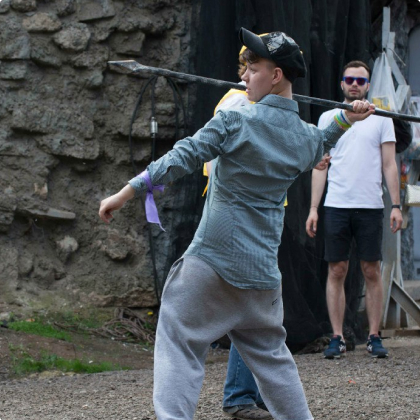

Справочник
Памятка новичка – наши метариалы, где сможете найти всю базовую информацию, рассказанную на вводном тренинге. Если вы захотите освежить свои знания, и напомнить себе о чем-то.
-  Психологические особенности детей-сирот
-  Привязанность
-  Особенности социально дезадаптивных детей
- Социальная адаптация
-  Социально дезадаптивные дети
-  Проявление агрессии у детей-сирот
- Психологические особенности детей-сирот
- Социальная адаптация
- Психологические особенности детей-сирот
- Привязанность
- Особенности социально дезадаптивных детей
- Социальная адаптация
- Социально дезадаптивные дети
- Проявление агрессии у детей-сирот
- Привязанность
- Социальная адаптация